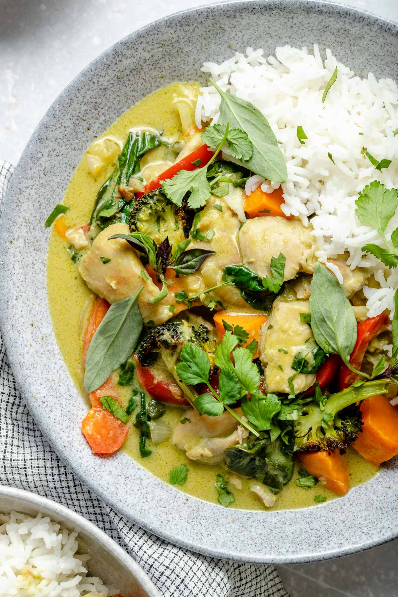

Thai Green Curry

Description
A gingery, garlicky, treat for the senses! Bright, fresh flavors meet cozy comfort food in this Thai Green Curry
with Gingery Chicken & Veggies! Garlicky & gingery chicken thighs simmer with bell peppers & onions in a creamy
coconut green curry sauce. Served up with roasted sweet potatoes, broccoli, & fluffy rice, this Thai green chicken
curry is a healthy & veggie-filled flavor bomb & it comes together in 45 minutes or less.
Ingredients
- 1 pound boneless, skinless chicken thighs (or breasts), cut into bite-sized pieces
- 4 cloves garlic, finely chopped or grated
- 1 1-inch piece fresh ginger, grated (about 1 tablespoon grated)
- 1 small head broccoli, cut into bite-sized florets
- 1 large sweet potato, diced into ½-inch cubes
- 1 large yellow onion, thinly sliced
- 1 large bell pepper, deseeded & thinly sliced
- 3 tablespoons melted coconut oil, divided
- 1 4-ounce can Thai-style green curry paste
- 1 14-ounce can light coconut milk
- 1 14-ounce can full-fat coconut milk
- 6 ounces baby spinach or greens of choice
- 1-2 large, juicy limes, juiced
- kosher salt & ground black pepper, to season
- for serving, as desired: cooked rice (or quinoa, or cauliflower rice), Thai basil, cilantro,
lime wedges, etc.
Cooking Steps
- Preheat the oven to 450 degrees F. Line a large baking sheet with parchment paper or aluminum
foil for easy clean up and set aside.
- Prep the chicken: Add the chicken, garlic, and ginger to a bowl, seasoning with 1 teaspoon kosher
salt. Stir to evenly coat the chicken in the garlic & ginger. Set aside.
- Roast the broccoli & sweet potato: Place the broccoli florets & diced sweet potato on the prepared
baking sheet. Drizzle 1 tablespoon of the coconut oil over top & season with ½ teaspoon kosher salt.
Toss to coat, then arrange the veggies in a single, uniform layer across the baking sheet. Once the
oven is preheated, roast the veggies for 20-25 minutes, shaking the baking sheet halfway through,
until the veggies are crisp around the edges & fork-tender. Remove from the oven & set aside.
- Cook the aromatic veggies: Add 1 tablespoon of the coconut oil to a deep skillet or Dutch oven
over medium-high heat. Once hot, add in the thinly sliced onion & bell pepper, seasoning with a pinch
of kosher salt. Cook, stirring frequently, until tender-crisp, 3-4 minutes. Transfer the veggies to a
plate & set aside.
- Cook the chicken: If needed, add the remaining tablespoon of coconut oil to the skillet or Dutch oven
used to cook the aromatic veggies. Once hot, add in the prepared chicken. Cook 4-5 minutes per side,
until browned around the edges & nearly cooked through.
- Build & simmer the green curry: Add the curry paste to the skillet, stirring to coat the chicken. Cook
2-3 minutes, allowing the curry paste to brown slightly. Add in the coconut cream & coconut milk. Simmer
for about 10 minutes, until the broccoli & sweet potato finish roasting. Just before serving, stir in
the spinach & the cooked onion & bell pepper from Step 4. Once the spinach is wilted, stir in the lime
juice. Remove from the heat.
- Serve: Serve the green curry & roasted veggies over rice (or quinoa or cauliflower rice). Finish with
fresh cilantro, Thai basil, and extra freshly squeezed lime juice as desired. Enjoy.